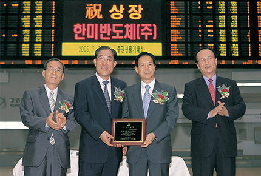
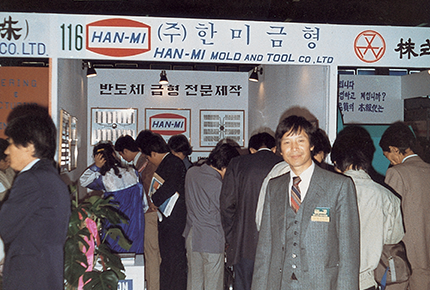

BRAND STORY
1980년, 금형에서 시작된
45년의 이야기

- 1980한미반도체 설립
- 2005KOSPI 증권 상장
- 2016TC BONDER 개발
- 2026한미 USA 설립
HISTORY
1980년부터 이어온
한미반도체의 발자취
금형에서 시작해 HBM TC 본더 세계 1위까지, 45년의 연구개발이 오늘의 한미반도체를 만들었습니다.
2020 — 현재
AI 반도체 시대를 이끄는 글로벌 리더

- 2026
- ‘BOC COB BONDER’ 개발
- ‘WIDE TC BONDER’ 개발
- ‘한미USA’ 설립
- 마이크론 ‘최우수 서플라이어상’ 수상
- 2025
- ‘3억불 수출의 탑’ 수상
- 세계일류상품 선정 ‘HBM TC BONDER’
- ‘한미싱가포르’ 설립
- 마이크론 ‘탑서플라이어상’ 수상
- 2023
- ‘Bonder Factory’ 오픈
- ‘한미베트남’ 설립
- 2022
- ‘micro SAW R&D 센터’ 오픈
- micro SAW ‘IR52 장영실상’ 수상
- 2021
- ‘2억불 수출의 탑’ 수상
- 국내 최초 패키지 절단용 ‘micro SAW’ 장비 런칭
- ‘micro SAW 전용’ 공장 오픈
- 2020
- ‘N K Kwak Hall’ 오픈
2010 — 2019
TC 본더로 연 새로운 10년
- 2017
- TSV DUAL STACKING TC BONDER ‘iR52 장영실상’ 수상
- ‘한미차이나’ 설립
- 2016
- ‘TC BONDER’ 개발
- ‘한미타이완’ 설립
- 2011
- ‘World Class 300’ 선정
- 2010
- 세계일류상품 선정 CAM PRESS TRIM FORM SINGULATION
- ‘1억불 수출의 탑’ 수상
2000 — 2009
세계일류상품과 코스피 상장

- 2008
- ‘레이저 연구부’ 설립
- 2007
- ‘리니어 로봇 연구부’ 설립
- 포브스 아시아 선정 ‘아시아 태평양 200대 베스트 중소기업’
- 2005
- 세계일류상품 선정 ‘VISION PLACEMENT’
- KOSPI 증권 상장
- 2003
- ‘TRAY VISION INSPECTION SYSTEM’ 개발
1980 — 1999
금형에서 시작된 도전

- 1998
- VISION PLACEMENT 장비 최초 개발
- 국제 표준 규격 (SEMI, CE, ISO 9001) 획득
- 1997
- ‘비전연구부’ 설립
- 1995
- ‘HANMI AUTO MOLD SYSTEM’ 개발
- 1994
- ‘CAM PRESS’ 개발
- 1993
- ‘REEL TO REEL TYPE AUTOMATIC MOLDING SYSTEM’ 개발
- 1990
- 국제자동화정밀기기전 우수상 수상
- 1989
- 세계 최초 ‘PLCC 금형’ 개발
- 1986
- ‘Mechanical Design & Software R&D 센터’ 설립
- 1985
- ‘AUTO FRAME LOADER’ 개발
- 1982
- 국제 금형기기 ‘반도체 금형 우수상’ 수상
- 1980
- 곽노권 회장 ‘한미반도체 설립’